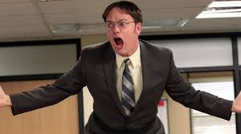
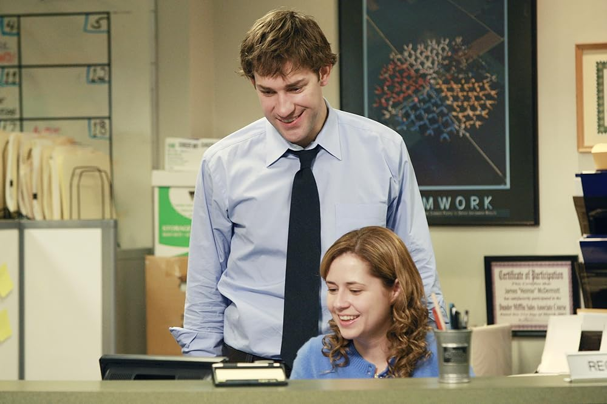

Conoce a los protagonistas de esta serie:
Michael Scott

Michael Scott es el excentrico y aveces torpe gerente regional de la oficina de Dunder Mifflin en Scranton. Es famoso por su sentido del humor inapropiado, sus intentos desesperados de caer bien a todos y su combinación de ingenuidad con momentos inesperadamente emotivos. Lo gracioso y entrañable de Michael está en como mezcla drama, situaciones absurdas y ternura en su manera unica de liderar.
Dwight Schrute
Dwight Schrute es el ambicioso y peculiar vendedor de Dunder Mifflin, conocido por su estricta adhesión a las reglas y su pasión por la seguridad y la agricultura. Lo caracteristico y divertido de Dwight está en su extrema seriedad, su competitividad desmesida y, sobre todo, en su constante enemistad con Jim, que siempre lo pone en situaciones comicas e inesperadas en la oficina.
Jim Halpert y Pam Beesly
Jim Halpert y Pam Beesly son compañeros de trabajo en la oficina, conocidos por su relacion cercana y su quimica innegable. Jim es divertido y sarcastico, siempre gastandole bromas a Dwight, mientras que Pam es dulce y observadora, con un ingenio sutil que complementa el de Jim. Lo entrañable y gracioso de ambos radica en como su amistad y romance crece entre situaciones comicas de oficina, miradas complices y pequeños gestos que los hacen inolvidables.